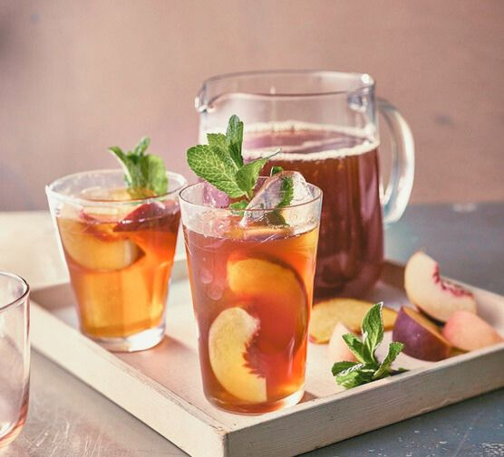
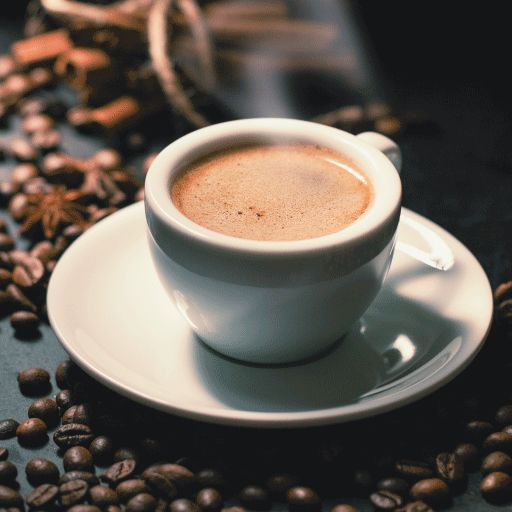
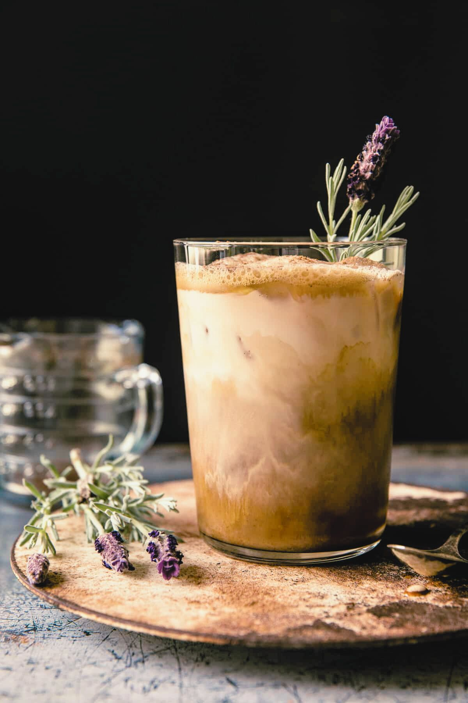
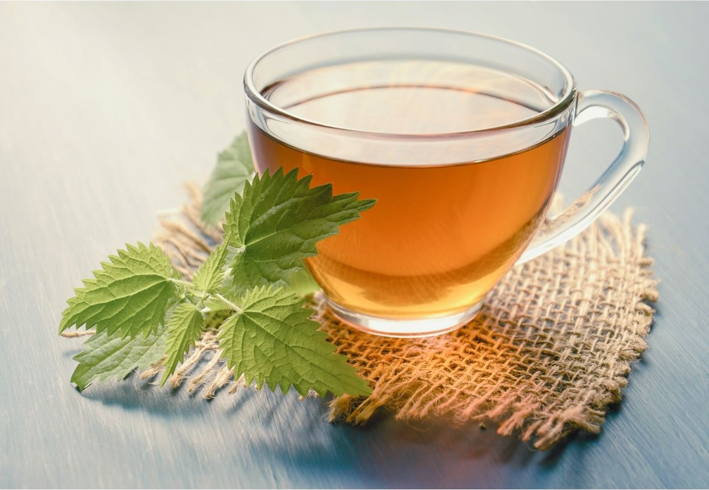
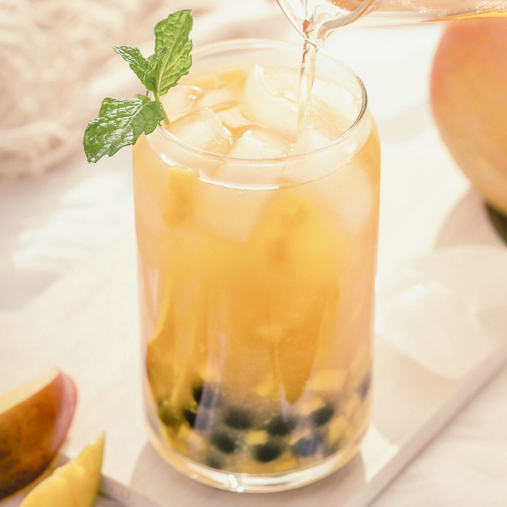

Home
Facebook Froth
A creamy latte with a sprinkle of nostalgia-inducing cinnamon.
Be cautious; excessive sipping may lead to prolonged scrolling and reminiscing about old memories
Instagram Iced Tea
A refreshing iced tea with a hint of peach and a splash of coconut water, garnished with a lemon wedge.
Sip slowly and savor the filtered perfection, but beware of creating unrealistic expectations about everyday life.
Unfollowed Espresso
This intense espresso shot is infused with a dash of bitter reality, reminding you of the fleeting nature of online connections.
Sip and savor the bitterness, symbolizing the unfollows and unfriending that come with the digital world.
Menu
Reality Check Latte
This comforting latte combines rich espresso with velvety steamed milk, finished with a sprinkle of cocoa powder for a touch of indulgence.
Savor each sip as you're reminded to stay present and grounded in reality amidst the hustle and bustle of daily life.
Detox Distraction Tea
A herbal tea infused with detoxifying herbs and a touch of tartness, designed to cleanse your mind from the constant digital distractions.
Sip and detoxify your thoughts, embracing a moment of clarity away from the online noise.
TikTok Tea
A fruity green tea blend with notes of mango and passionfruit, served over ice.
Sip with care; frequent indulgence may lead to spontaneous dance moves and an irresistible urge to create viral content.retro-froth.jpg